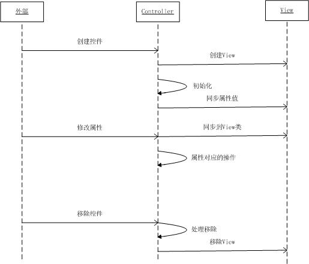

Controller 类
导引
欢迎使用BUI！在这一章节里，我们将学习以下内容:
- View类的实现
- 如何与Controller类通信
- 如何实现自己的View类
- 难度：中级
- 版本：1.0
View 类
首先我们回顾一下上一章节讲的内容：

- Model: 控件的配置项、当前的属性值或者控件代表的数据
- Controller : 管理控件创建、移除的逻辑；控件的方法或者事件
- View : 控件在页面创建的DOM，以及这些DOM上应用的样式
在上一章里主要讲解了Controller类，本章主要讲解View类的实现和如何通过Controller来控制View类
View类的实现
View类也是继承于UIBase类，支持事件、属性和控件的生命周期管理：

- View 类继承UIBase类
- View 类使用TplView扩展类，处理模板的html渲染，后面的使用模板章节会详细介绍
View类和Controller类
关系
由于BUI的控件都是基于MVC的，所以每个控件都有一个View类，一个Controller类。2者的关系如下：
- 定义一个控件时，需要同时定义Controller和View（可以不创建View，默认使用父类的View）。
- 定义控件属性是，指定是否应用到View类
- 用户直接面对和创建的是Controller类，配置项在实例化控件时通过Controller类传入。
- Controller类通过View类更改页面元素（HTML，CSS）
- 用户更改Controller的属性，如果该属性牵扯到View类，在改变Controller属性的同时，更改View类。
- Controller存在子控件（一个控件可以包含多个子控件），View不存在子控件
- Controller 移除的时候，移除对应的View类，删除View类的页面元素（HTML,CSS）
示例
通过下面的示例，使大家更直观的了解2者的关系
- 通过配置
ATTRS中的属性xview来指定View类 - 在
ATTRS的属性定义中，只有设置了view : true的属性才回在创建控件的时候同步到View类 - 也只有设置了
view : true的属性，在属性值更改时同步到View类 - 所有在
ATTRS的属性定义的属性，在改变时都会调用_uiSetXxx的方法 - Controller类中的
_uiSetXxx,和View类中的_uiSetXxx分别执行，互不干扰
属性同步过程
通过下图我们来看属性的同步过程

创建自己的View类
以下场景需要创建自己的View类
- 定义了一个或多个属性需要进行DOM，CSS操作
- 引入的扩展类（Mixin类）存在对应的View类，那么需要创建自己的View类引入扩展的View类
- 需要覆写父类的View类的某些方法
扩展类的View类
扩展类会在后面的章节里详细介绍，这里仅介绍为何引入扩展类的View类，看下面的示例：
- 由于AControl类使用了扩展AMixin，而AMixin中由DOM操作，所以创建 AMixinView类
- AControl使用了AMixin后，对应的默认View类（Controller类的View类）不支持AMixinView的属性
- 所以引入AView类继承自A的父类的View类，同时在AControl上指定
在实现控件的时候，很多场景下不需要实现自己的View类，具体的实现方式由开发者自己去权衡。
API
下面只是简单的列表，未显示从父类继承来的方法，详细信息请查看API文档
下一步学习
学完本章后，你可以继续学习通用管理类了解如何在页面上管理所有的控件